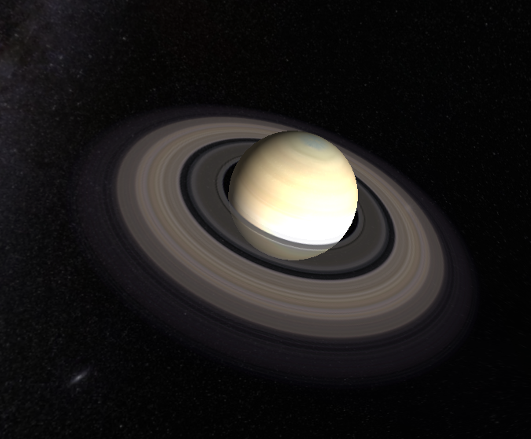
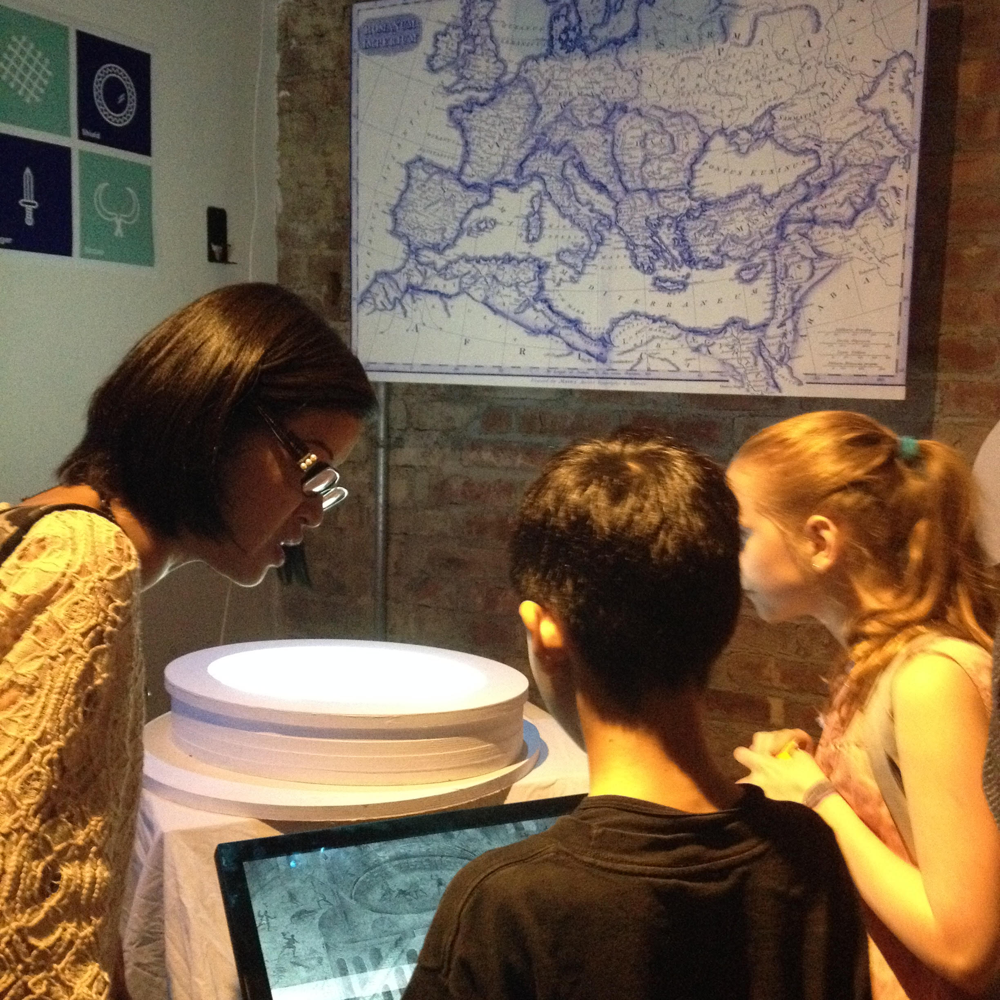
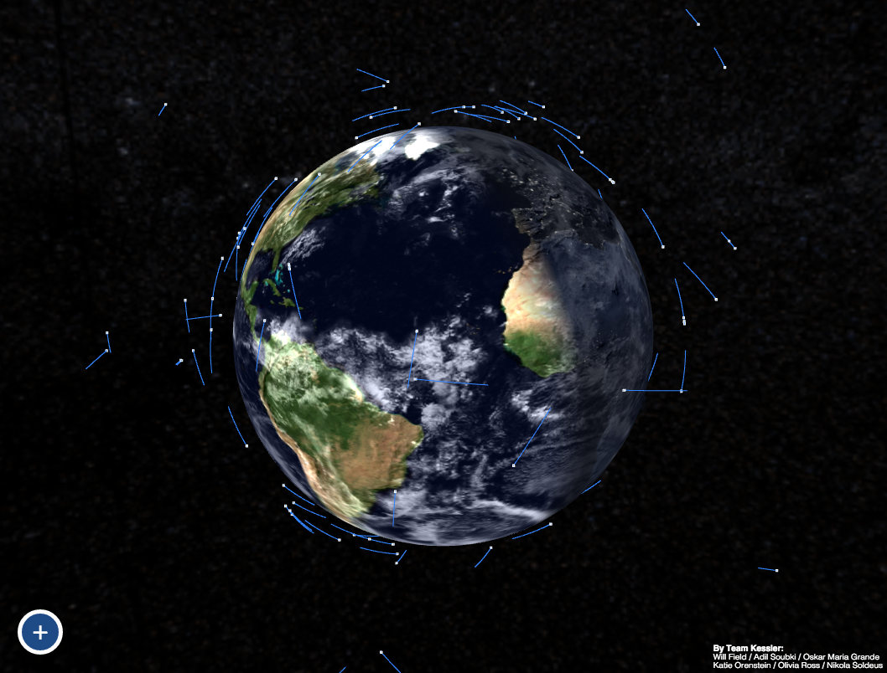
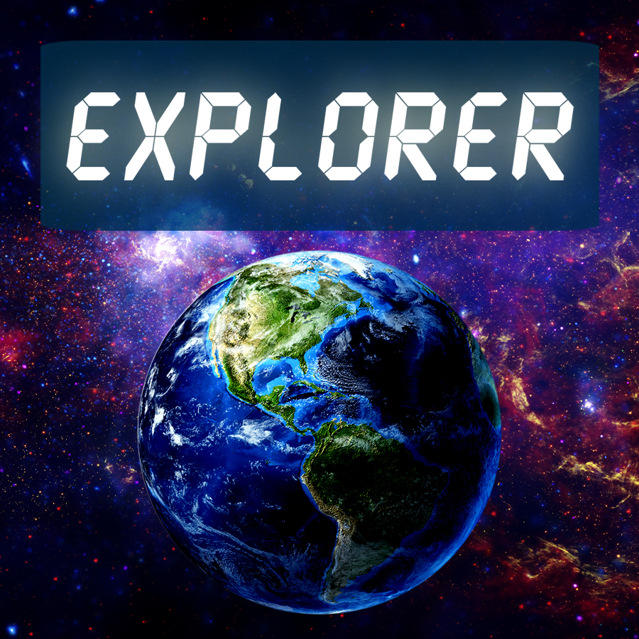
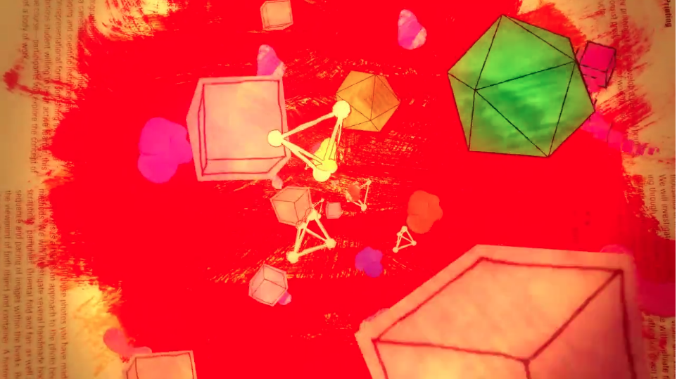

explore.js

In 2016, I completed the Master’s program at the Interactive Telecommunications Program (ITP) at NYU. My thesis, explore.js, is an open-source toolkit that helps designers, artists, teachers, and amateur astronomers visualize the cosmos. It is composed of a JavaScript library that consolidates various astronomy tools, a texture pack, and scripts to help manage API requests on the back-end.
Motion Graphics

Center Stage

Center Stage is a museum exhibition designed and executed by myself, Dalit Shalom and Hugo Lucena for the Playful Communication for Serious Research course at ITP, Spring 2015. We worked with historian and archeologist Sebastian Heath to communicate the research he does on Roman gladiators and amphitheaters.
Our group collaboratively designed the concept and style package for the exhibit. We then split up tasks to execute at which point I took on the development and implementation of the exhibit’s interactive component.
The interactive component consists of a touch screen application in which the visitor follows a gladiator throughout their career as they gain status and fight in progressively larger arenas.
Each fight is triggered by the app and plays out as a projection into a physical model of an amphitheater.
Kessler Syndrome

I started Space Trash as a class project for Networked Media at the Interactive Telecommunications program at NYU. Space Trash tracks man-made debris in orbit around the Earth in real time by pulling in TLE data from the space-track.org API. The Earth is textured with a custom WebGL shader I wrote to display both night and day sides with a layer of moving clouds.
At the 2015 NASA Space Apps challenge, I joined up with partners to upgrade the app to have it predict and display potential debris collisions and visualize the data in 3D space. This version of the project was posted on Chrome experiments in July 2015. I worked on the Three.js visualization while my team cleaned up the back end process.
Explorer

Explorer is a space simulator built entirely in Processing. It is designed to be an educational tool that teaches about orbital mechanics. The user of the simulator controls a space ship orbiting one of four planetary bodies in our Solar System – the Moon, Mercury, Earth and Neptune.
The simulator has two modes: free play and tutorial. Free play allows the user to direct the ship as desired and for any planet to be chosen at any time. Tutorial mode guides the user through several steps explaining how to get into orbit and how to change the shape of the orbit.
My partner, Minju Kim helped me build an Arduino powered controller to control the ship and camera. The project is designed as a prototype for a interactive museum didactic. It is targeted to ages 10+ but is enjoyable for all ages.
Writing on the Wall

Writing On The Wall is a music video that I independently produced and animated for The Jean Marie